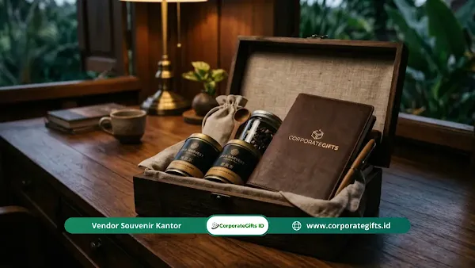

Corporate Gifts ID - Target Corporate Gift Q2 adalah kelompok penerima hadiah perusahaan pada kuartal kedua tahun 2026, yang meliputi karyawan internal, klien bisnis, pekerja lapangan, hingga peserta acara dan komunitas sosial. Penentuan target ini didasarkan pada nilai utilitas, fungsionalitas, dan kepercayaan penerima, serta disesuaikan dengan momen penting di kuartal dua seperti pasca Idul Fitri, Hari Kartini, Hari Buruh, dan persiapan Idul Adha.
Poin Kunci Strategi Target Corporate Gift Q2:
- Segmentasi Berlapis: Memetakan penerima secara presisi antara staf hibrida, pekerja garis depan, dan klien eksekutif guna memaksimalkan dampak fungsional.
- Ekonomi Kepercayaan: Menggeser orientasi hadiah dari sekadar promosi logo massal menjadi cinderamata apresiasi personal yang membangun relasi jangka panjang.
- Konsep Quiet Branding: Menghindari logo besar mencolok dan beralih pada grafir minimalis elegan, ukiran laser nama personal, serta QR code interaktif.
- Alokasi Logistik Terencana: Menjadwalkan pengadaan 6 hingga 8 minggu sebelum puncak hari besar (seperti Idul Adha) untuk menjamin ketepatan distribusi dan kestabilan biaya.
Memasuki kuartal kedua tahun 2026, pemberian suvenir promosi massal sudah dianggap tertinggal zaman. Perusahaan yang lambat beradaptasi berisiko kehilangan momen penting bersama karyawan, klien, dan mitra bisnis. Anggaran yang dialokasikan untuk barang generik berpotensi terbuang percuma karena barang tersebut berakhir di tempat sampah tanpa pernah dipakai.
Kuartal dua di Indonesia dipadati momen krusial yang menuntut pendekatan lebih cerdas dalam pemberian hadiah. Memilih Corporate Gift Q2 yang tepat menjadi kunci utama keberhasilan retensi karyawan dan loyalitas klien. Artikel ini membedah cara menentukan target penerima secara tepat, sekaligus memilih jenis hadiah fungsional yang sedang menjadi tren.
Fungsi corporate gift kini bergeser dari sekadar alat pengenalan merek menjadi bentuk apresiasi yang tulus kepada penerima. Berikut strategi lengkapnya agar perusahaan Anda tidak tertinggal langkah dari kompetitor.
Siapa Saja Target Corporate Gift Q2 yang Utama?
Karyawan dan pekerja lapangan adalah tulang punggung perusahaan yang membutuhkan perhatian ekstra. Hadiah yang tepat berfungsi layaknya pelumas yang melancarkan kinerja tim secara keseluruhan.
Target utama pemberian hadiah ini meliputi staf internal yang bekerja secara hibrida serta pekerja lapangan yang membutuhkan dukungan pemulihan fisik. Memasuki bulan April, pekerja kembali ke rutinitas padat sehingga rentan mengalami kelelahan mental dan fisik.
- Fokus Kesejahteraan Pekerja: Berikan alat terapi pijat mini atau matras akupresur untuk meredakan ketegangan otot setelah duduk lama, sehingga pekerja dapat kembali segar dengan cepat.
- Dukungan Staf Hibrida: Pilih dudukan laptop aluminium dan pengatur kabel meja untuk merapikan area kerja di rumah, sehingga produktivitas staf meningkat.
- Pemulihan Pekerja Lapangan: Sediakan kipas leher elektrik dan botol minum insulasi agar cuaca panas tidak lagi menjadi halangan dan tubuh mereka tetap terhidrasi.
Perlengkapan Ergonomis Keselamatan Staf
Pekerja garis depan menghadapi risiko kelelahan dan tekanan lingkungan yang jauh lebih tinggi setiap harinya. Mengurangi ketegangan postur menjadi hal esensial bagi insinyur lapangan dan pengawas lokasi proyek.
- Deteksi Kelelahan Dini: Berikan pelacak kesehatan pintar dengan sensor tingkat oksigen sebagai sistem peringatan dini terhadap stres berlebihan, sehingga staf dapat mengambil jeda istirahat tepat waktu.
- Alas Kaki Penunjang: Hadiahkan sepatu khusus yang mendistribusikan tekanan kaki dan menyerap benturan saat berjalan jauh, sehingga risiko cedera atau nyeri sendi dapat dicegah secara efektif.
- Kacamata Terapi Cerdas: Sediakan kacamata relaksasi dengan getaran mikro untuk merangsang relaksasi saraf mata, sehingga masa pemulihan di rumah lebih maksimal setelah seharian bekerja di luar ruangan.

Kurasi bingkisan eksekutif bernilai utilitas tinggi untuk memikat klien VIP pada momen kuartal kedua.
Bagaimana Memikat Klien dan Prospek Penjualan dengan Corporate Gift Q2?
Klien ibarat tamu kehormatan yang berkunjung ke perusahaan Anda. Suguhan istimewa akan membuat mereka ingin kembali menjalin kerja sama jangka panjang.
Cara terbaik memikat klien adalah memberikan hadiah gaya hidup premium yang memiliki nilai utilitas harian dan fungsionalitas tinggi, karena hubungan bisnis saat ini sangat mengandalkan ekonomi kepercayaan. Bingkisan promosi murahan justru berisiko merusak citra eksklusif merek Anda di hadapan mitra strategis.
- Apresiasi Klien Eksklusif: Hadirkan bingkisan premium berisi cokelat artisan, seduhan teh nusantara pilihan, dan tas kanvas kulit eksklusif untuk memberi kesan mewah sehingga klien merasa sangat dihargai.
- Daya Tarik Prospek Penjualan: Berikan perangkat modern seperti wireless charger pad atau buku catatan digital pintar sebagai pendukung aktivitas bisnis harian agar citra perusahaan Anda dinilai inovatif.
- Pengikat Mitra Strategis: Pilih perlengkapan meja kerja berbalut kulit asli atau diffuser aromaterapi aromatik untuk memperkuat relasi personal di luar urusan pekerjaan formal.
Pendekatan Branding Tanpa Suara (Quiet Branding)
Klien korporat di tahun 2026 tidak lagi menyukai merchandise dengan cetakan logo perusahaan yang terlalu besar dan mencolok. Penempatan logo yang halus, proporsional, serta dipadukan dengan sentuhan ukiran nama personal penerima justru memberikan nilai sentimental dan prestise yang jauh lebih tinggi.
- Integrasi Label Digital (QR Code): Tambahkan kode pemindaian estetik pada kemasan atau produk hadiah berkualitas tinggi, memungkinkan klien melihat pesan apresiasi personal dalam format video digital interaktif.
- Barang Fungsional Meja Kerja: Kirimkan tumbler vacuum SUS304 dengan warna matte elegan agar klien selalu menaruhnya di meja kerja, menjaga visibilitas brand Anda tetap hadir secara natural setiap hari.
- Momentum Pertengahan Tahun: Manfaatkan momen bulan Juni untuk memperbarui komunikasi bisnis dengan mengirimkan paket relaksasi atau hampers wellness eksekutif menjelang evaluasi semester pertama.
Apa Hadiah Terbaik untuk Acara dan Komunitas Sosial?
Menyelenggarakan acara besar sama seperti menggelar pertunjukan yang harus meninggalkan kenang-kenangan mendalam bagi para penontonnya. Hadiah terbaik menggabungkan integrasi teknologi digital ringan untuk peserta pameran dan produk ramah lingkungan untuk komunitas.
Peserta pameran umumnya menghindari barang berat yang memakan tempat di koper, sementara kelompok sosial sangat menghargai produk cinderamata yang memberdayakan wirausaha lokal dan ramah ekologi.
- Inovasi Suvenir Pameran: Gunakan plakat akrilik mini atau smart badge berkode khusus agar peserta langsung mendapat akses materi presentasi dan brosur digital tanpa perlu membawa beban kertas tambahan.
- Barang Bawaan Ringkas: Sediakan botol minum silikon lipat food-grade yang praktis dan mudah dimasukkan ke dalam saku tas kabin pesawat, memastikan souvenir selalu dibawa bepergian oleh peserta.
- Produk Pemberdayaan Lokal: Bermitra dengan pengrajin lokal untuk membuat produk anyaman serat alam atau pouch batik tulis guna mendukung keberlanjutan ekonomi komunitas wanita di pedesaan.
Pemilihan Material Ekologi Regeneratif
Bagi komunitas sosial dan mitra CSR, konsep keberlanjutan harus berfokus pada regenerasi serta perbaikan lingkungan yang nyata. Menyampaikan narasi autentik di balik proses pembuatan barang menjadi nilai tambah yang sangat dihargai oleh penerima modern.
- Kertas Benih Tanam (Plantable Seed Paper): Gunakan kertas daur ulang berisikan benih tanaman hidup sebagai elemen pelengkap kartu ucapan atau sertifikat, sehingga penerima dapat menanamnya menjadi bunga atau herbal tanpa meninggalkan limbah sampah.
- Material Bambu Alami: Pilih wadah penyimpanan dan alat tulis berbahan bambu laminasi karena tanaman bambu tumbuh cepat tanpa pupuk kimia dan mudah terurai secara hayati.
- Daur Ulang Plastik Lautan (Ocean Bound Plastic): Manfaatkan material daur ulang limbah plastik pesisir untuk memproduksi tote bag kain kuat, berkontribusi langsung pada pengurangan emisi karbon dan pelestarian ekosistem laut.
Matriks Segmentasi Target Corporate Gift Q2 2026
Untuk memudahkan tim pengadaan (procurement) dan HR dalam menyusun alokasi cinderamata, berikut tabel panduan segmentasi target corporate gift kuartal kedua yang terbukti efektif:
| Kelompok Target | Momentum Q2 | Rekomendasi Hadiah | Nilai Strategis & Dampak ROI |
|---|---|---|---|
| Staf Internal & Tim Hibrida | Pasca Idul Fitri & Q2 Kickoff | Smart notebook, dudukan laptop aluminium, pengatur kabel meja | Meningkatkan fokus kerja, kenyamanan ergonomis di rumah, dan motivasi kerja tim |
| Pekerja Lapangan & Teknisi | Hari Buruh (May Day) | Kipas leher elektrik, tumbler vacuum SUS304, pelacak kebugaran | Wujud apresiasi keselamatan fisik, menjaga hidrasi kerja, dan mereduksi risiko burnout |
| Klien VIP & Mitra Bisnis | Mid-Year Review (Juni) | Executive gift box teh artisan, wireless charger kulit, pena ukir laser | Mempererat ekonomi kepercayaan, mengamankan retensi kontrak B2B, dan prestise brand |
| Peserta Acara & Komunitas | Expo, Seminar, & Hari Kartini | Kertas benih tanam, botol silikon lipat, pouch anyaman kerajinan lokal | Eksposur branding ramah lingkungan, mendukung CSR lokal, dan praktis dibawa bepergian |
Bagaimana Tips Merencanakan Eksekusi Corporate Gift Q2?
Perencanaan yang buruk berisiko menghasilkan eksekusi yang berantakan dan menghabiskan anggaran secara tidak efisien. Perusahaan perlu menentukan tujuan utama, melakukan segmentasi penerima, menyelaraskan momentum, dan mengatur logistik sejak awal. Mengelola anggaran souvenir kuartal dua membutuhkan ketelitian tingkat tinggi.
Berikut beberapa tips praktis agar alokasi pengadaan hadiah tetap terkendali dan berdaya guna maksimal:
- Segmentasi Tujuan Berdasarkan Anggaran: Pisahkan anggaran antara pekerja kantor harian dan jajaran eksekutif mitra untuk mencegah pemborosan dana pada barang seragam, sehingga rasio distribusi biaya lebih proporsional.
- Penjadwalan Logistik Tepat Waktu: Gunakan layanan simpan dan kirim (fulfillment) dari vendor terpercaya, serta rencanakan pemesanan enam hingga delapan minggu sebelum puncak perayaan Idul Adha agar pengiriman tidak terhambat kepadatan kurir ekspedisi.
- Paket Tema Khusus (Thematic Bundling): Gabungkan beberapa item pelengkap menjadi satu paket tematik berdesain senada agar pengalaman unboxing terasa lebih kohesif, eksklusif, dan memuaskan penerima.
Evaluasi Keberhasilan Program Suvenir
Sangat penting menyusun checklist evaluasi pengadaan untuk memantau hasil akhir dari investasi hadiah korporat. Cinderamata yang direncanakan dengan baik harus mampu memberikan dampak nyata bagi reputasi dan keberlanjutan bisnis perusahaan.
- Tingkat Retensi Pemakaian Barang: Pantau persentase penerima yang masih aktif menggunakan barang tersebut setelah beberapa bulan. Angka retensi di atas delapan bulan menandakan keberhasilan kurasi fungsi, sementara angka rendah menunjukkan perlunya evaluasi ulang pada desain produk.
- Pembaruan Kontrak Kemitraan: Amati interaksi lanjutan dan pertemuan bisnis prospek setelah pengiriman hadiah dilakukan untuk mengukur tingkat kepuasan dan loyalitas klien dalam memperpanjang kontrak kerja sama.
- Sentimen Karyawan Internal (eNPS): Lakukan survei singkat mengenai kepuasan staf terhadap apresiasi perusahaan, penurunan tingkat stres, dan rasa keterikatan kerja sebagai indikator keberhasilan program kesejahteraan HR.
Kesimpulan & Rekomendasi Pengadaan
Transformasi pemberian suvenir korporat menuntut manajemen untuk lebih peka terhadap kebutuhan nyata setiap kelompok penerima. Memilih produk yang memiliki nilai utilitas tinggi menunjukkan bahwa perusahaan Anda hadir membawa solusi fungsional dan kepedulian tulus, bukan sekadar membagikan media promosi biasa.
Setiap bingkisan yang dikirimkan dengan tepat sasaran merupakan jembatan kokoh untuk merawat kepercayaan mitra dan memacu dedikasi karyawan. Mulailah merencanakan apresiasi terbaik untuk tim dan mitra bisnis Anda bersama konsultan berpengalaman di CorporateGifts.ID.